前面的笔记说，python中的一切数据类型都是对象
我们在细化下就是:对象可由两部分组成：对象数据和对象方法
针对不同类型的数据对象，有不同的操作对象的方法。
那么我们开始看下字符串对象的常用方法：
一、find() 用于返回子字符串在字符串中的位置
格式：str.find()
1 a = '1,hello,34,567' #我们让字母a指向字符串
2 #格式：str.find() 用该方法返回子字符串'hello'在字符串的位置，记住返回的不是元素下标，不会从0开始
3 print(a.find('hello') ) #格式：str.find() str代表字符串 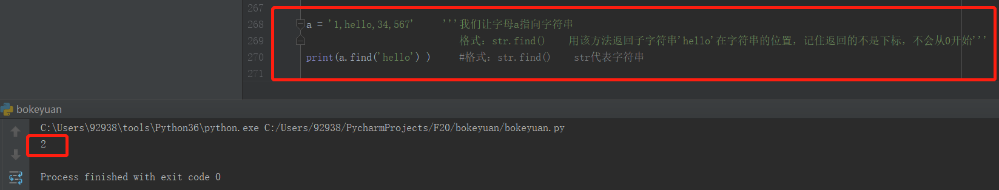
二、count() 可以计算出字符串中的子字符串在字符串中出现了几次
格式：str.count()
1 a = '1,2,1,3,1,3'
2 print(a.count('3')) #统计子字符串，数字3在整个字符串中，出现的次数是两次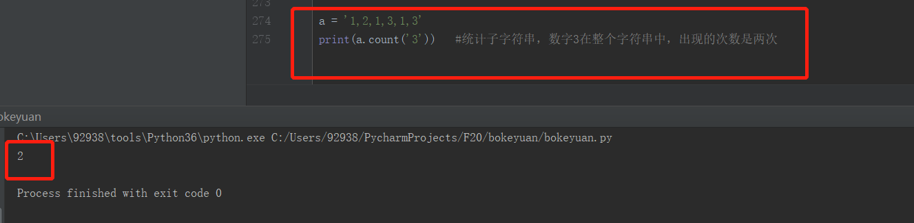
三、join() 可以将前面我们说过的，sequence类型数据的元素字符串连接成一个字符串。string作为分隔符
格式： str.join()
1 a = ['h','e','l','l','o'] #将列表中的元素，分别用新的分隔符来分割，创建成另一个字符串
2 print(' 8 '.join(a)) #str部分，可以是你任意需要的字符串，用来当做分隔符，分割列表里面的元素
3
4 b = ('w','o','r','d') #元组也是sequence类型的数据哦
5 print(' 9 '.join(b))
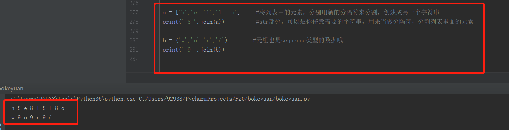
四、split() 你可以将字符串中你需要的元素，作为你的分割符
格式： str.split()
1 a = 'hell,oword'
2 print(a.split(',')) #用字符串中的【，】号，从中间分割成两个子字符串，print(a[4]) 取元素是逗号，所以是用逗号这个元素来分割的
3
4 b = '我喜欢你，我今年19岁，我要和你在一起'
5 print(b.split('，')) #用字符串中的【，】号，从中间分割成三个子字符串
6
7 #需要注意的是，被分割的子字符串被存放在了列表里。可以用元素下标，去取你需要的部分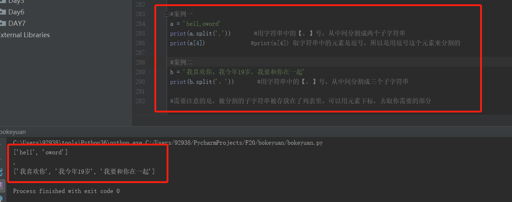
五、replace() 替换字符串里面的子字符串
格式：str.replace(旧，新)
1 a = '我以经18岁了' #有个错别字呀
2 print(a.replace('以','已')) #我们替换错别字，记住前面的参数是需要被替换的错字，后面是顶替的新字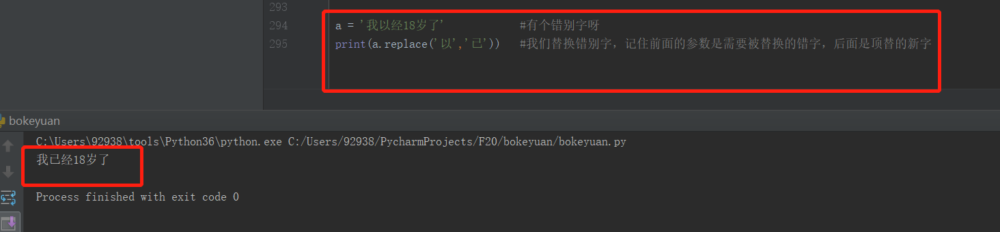
六、lower() 将字符串里面的大写字母，全部换成小写 A----》a
格式：str.lower()
1 lower_a = 'Hello Word' #定义的字符串中有两个字母是大写H / W
2 print(lower_a.lower()) 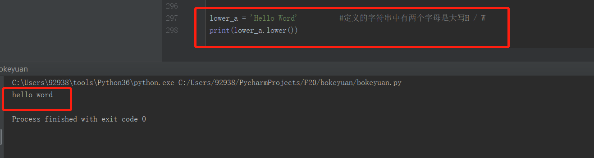
七、upper() 它的作用是如果字符串中包含大写字母，那么就把整个字符串都转换成大写 Hello Word -----》 HELLO WORD
格式：str.upper()
1 upper_a = 'Hello Word' #定义的字符串中有两个字母是大写H / W,所以你要把整个字符串都变成大写字母
2 print(upper_a.upper())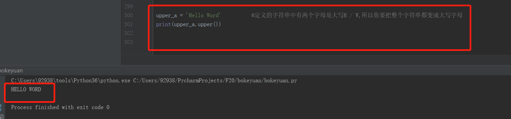
八、strip() 它可以将字符串前面和后面的空格去掉 ‘ a ’ ----》 ‘a’ 前后都去掉哦
格式：str.strip()
1 a = ' hello ' #前后各五个空格
2 print(a)
3
4 b = ' hello ' #前后各五个空格
5 print(b.strip()) #可以直观的和上面的a对比，空格被删除了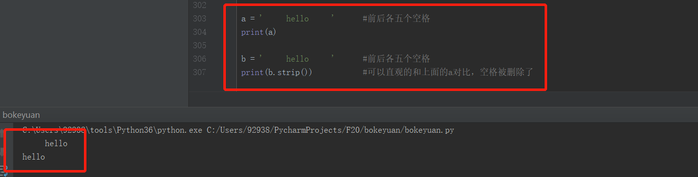
同样的方法还有两个：str.lstrip（） 用于删除字符串中左边的空格 str.rstrip 用于删除字符串中右边的空格
字符串的方法还有很多，只列举常见的几种，后期的学习大家可以根据需要再去查询。
那么接下来，开始列表的操作方法：
接下来我们创建一个空的list[ ] 列表:
1 a = [] #创建的空列表，用变量a指向它
2 print(a)我们有了空的列表，我们可以对列表进行改变：
一、append() 给列表尾部添加元素 ['1','2'] -----》['1','2','3'] 3这个元素会到列表的最后尾部
格式：list_a.append()
1 a = [ ] #创建的空列表，用变量a指向它
2 a.append('1') #添加元素1，记住append()这个方法是：向列表的尾部进行添加
3 print(a)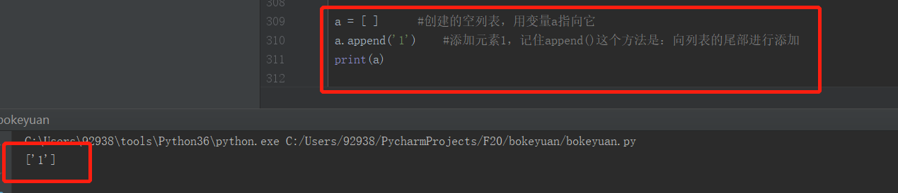
二、insert() 这个方法可以选择性插入到你想要的位置
格式：list_a.insert(0，5) #格式中的参数有两个，第一个参数0，代表的是要插入的元素下标的位置
第二个参数是5，就是我们要插入的数据是数字对象5，你也可以插入一个列表或字符串，我们之前的笔记说，列表是一个容器，任何python的数据类型都可以存放。
1 a = ['2','3','4'] #我们要在这个列表中元素下标0的位置添加数字1
2 a.insert(0,1) #记住格式哦，元素的下标是从0开始的
3 print(a)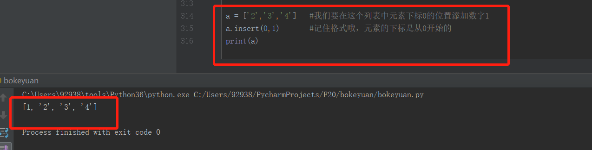
那么大家一定猜想道了，有添加肯定就会有删除的方法~~~
三、del 这是根据指定列表的元素下标去删除
格式：del list_1[0] 我们要del 删除list_1这个列表中的元素下标为0的元素。
1 a = ['2','3','4']
2 del a[0] #用del的删除a这个列表中元素 下标为0的元素
3 print(a) #那么2会被删除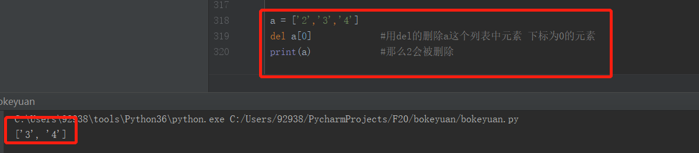
四、pop() 这个方法不仅仅是删除元素，它会将删除掉的元素返回给你，所以我们操作元素会很灵活
格式：a.pop() #括号中的参数是你要删除的元素
1 a = [2,3,4]
2 b = a.pop(1) #我们指定删除元素3，然后把3返回给变量b #记住元素下标从0开始计算，所以下标1对应的是列表中的数字3
3 print(b)
4
5
6 c = ['a','b','f','g']
7 d = c.pop(1) #字符串对象，我们可以也用元素下标的方法删除，同样会返回删除的子字符串给变量d
8 print(d)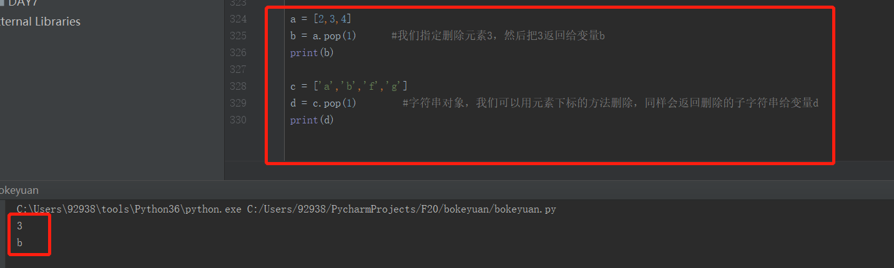
五、remove() 这种方法是根据值去删除，就是删除谁，就把谁写在括号中，但是如果列表中这个值存在多个，那么删除的是第一个它
格式：a.remove()
1 a = ['a','b','a','c'] #列表中有两个a
2 a.remove('a') #我们删除的将是第一次出现的a
3 print(a)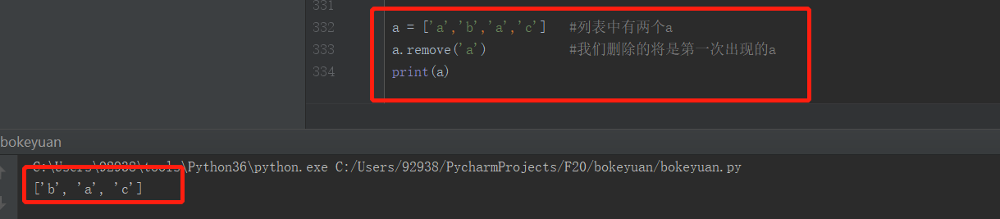
六、reverse() 该方法可以将一个列表里面的排序进行倒序 ['1','2','3'] ------》 ['3','2','1']
格式：a.reverse()
1 a = [1,2,3,4]
2 a.reverse()
3 print(a)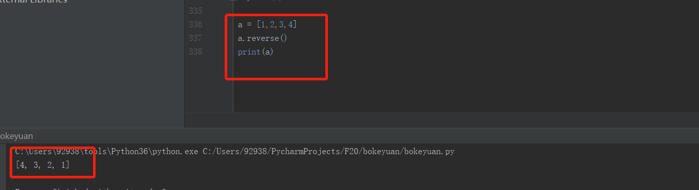
七、count() 前面的笔记我们有提及过该方法，这个方法是统计当前指定某个值，一共有多少个。
格式：a.count() 括号中填入要统计的值，会返回该值在列表中的出现次数。 同样该方法适用于元组和字符串
1 a = [1,2,4,4,4] #这是一个列表
2 print(a.count(4)) #我们统计4这个值，出现的次数
3
4 a = (1,2,5,5,5) #这是一个元组
5 print(a.count(5)) #我们统计5这个值，出现的次数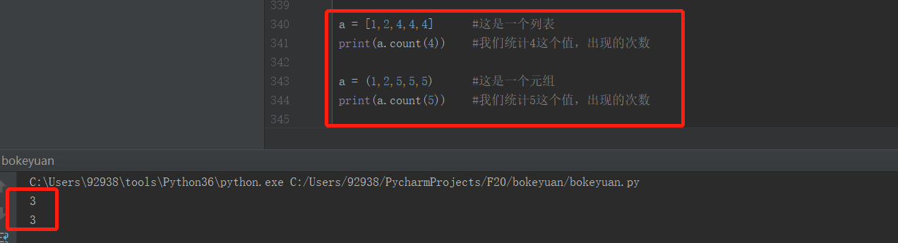
还有很多方法，最基本的这些掌握应该也够一展拳脚。后续其他的方法遇见的时候，在唠叨~~~
------------------来自在坚持路上的新人